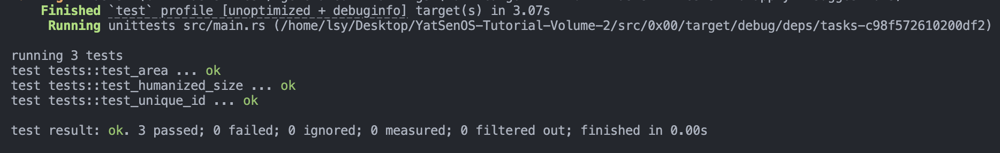

YSOSv2: lab0 实验报告
配置实验环境¶
我的实验环境：Ubuntu 22.04 LTS (jammy)
在 Windows 上使用 VMware Work Station 作为 VMM，具体配置见下图：

安装项目开发环境¶
在 Linux 平台上通过 VSCode (Remote) + Python / make + GDB 结合 gef 进行开发、调试。
尝试使用 Rust 进行编程¶
使用 Rust 编写一个程序，完成以下任务：¶
创建一个函数 count_down(seconds: u64)¶
该函数接收一个 u64 类型的参数，表示倒计时的秒数。
函数应该每秒输出剩余的秒数，直到倒计时结束，然后输出 Countdown finished!。
fn count_down(mut seconds: u64){
while seconds>0 {
println!("remaining time: {}",seconds);
thread::sleep(Duration::from_secs(1));
seconds = seconds-1;
}
println!("Countdown finished!");
}
创建一个函数 read_and_print(file_path: &str)¶
该函数接收一个字符串参数，表示文件的路径。
函数应该尝试读取并输出文件的内容。如果文件不存在，函数应该使用 expect 方法主动 panic，并输出 File not found!。
尝试使用 io::Result<()> 作为返回值，并使用 ? 将错误向上传递。
fn read_and_print(file_path: &str) -> io::Result<()> {
let mut s = String::new();
let mut f = File::open(file_path).expect("File not found!\n");
f.read_to_string(&mut s)?;
println!("{}",s);
Ok(())
}
创建一个函数 file_size(file_path: &str) -> Result<u64, &str>¶
该函数接收一个字符串参数，表示文件的路径，并返回一个 Result。
函数应该尝试打开文件，并在 Result 中返回文件大小。如果文件不存在，函数应该返回一个包含 File not found! 字符串的 Err。
尝试将 std::io::Result 转换为 std::Result，你可能需要 map_err 等函数。
fn file_size(file_path: &str) -> Result<u64, &str>{
match fs::metadata(file_path.trim()) {
Ok(m) => Ok(m.len()),
Err(_) => Err("File not found!").map_err(|e| {e.into()}),
}
}
在 main 函数中，按照如下顺序调用上述函数：¶
- 首先调用
count_down(5)函数进行倒计时 - 然后调用
read_and_print("/etc/hosts")函数尝试读取并输出文件内容 - 最后使用
std::io获取几个用户输入的路径，并调用file_size函数尝试获取文件大小，并处理可能的错误。
代码：
//首先调用 count_down(5) 函数进行倒计时
count_down(5);
//调用 read_and_print("/etc/hosts") 函数尝试读取并输出文件内容
println!("\n{}\n", "/etc/hosts文件内容:".red());
read_and_print("/etc/hosts").expect("Reading file error! Can't convert the content of the file into String!\n");
//使用 std::io 获取几个用户输入的路径，并调用 file_size 函数尝试获取文件大小，并处理可能的错误。
println!("\nPlease enter your input:");
let mut input = String::new();
io::stdin().read_line(&mut input).expect("Failed to read line\n");
match file_size(&input){
Ok(size) => {
let (num, unit) = humanized_size(size);
println!("Size : {:.4} {}", num, unit)
}
Err(msg) => println!("{}",msg),
}
运行结果：

几个函数和结构体、枚举类型方法测试¶
实现一个进行字节数转换的函数，并格式化输出：¶
实现函数 humanized_size(size: u64) -> (f64, &'static str) 将字节数转换为人类可读的大小和单位
代码：
fn humanized_size(size: u64) -> (f64, &'static str){
let unit: [&str; 4] = ["B", "KiB", "MiB", "GiB"];
let mut index = 0;
let mut num = size as f64;
while num >= 1024 as f64 && index <= 3 {
num /= 1024 as f64;
index += 1;
}
(num , unit[index])
}
自行搜索学习如何利用现有的 crate** 在终端中输出彩色的文字¶
输出一些带有颜色的字符串，并尝试直接使用 print! 宏输出一到两个相同的效果。
尝试输出如下格式和内容：
INFO: Hello, world!，其中INFO:为绿色，后续内容为白色WARNING: I'm a teapot!，颜色为黄色，加粗，并为WARNING添加下划线ERROR: KERNEL PANIC!!!，颜色为红色，加粗，并尝试让这一行在控制行窗口居中- 一些你想尝试的其他效果和内容......
println!("{} {}", "INFO:".green(), "Hello, world!".white());
println!("{}{}", "WARNING".yellow().bold().underline(), ": I'm a teapot!".yellow().bold());
let w = if let Some((Width(w), _)) = terminal_size() {w} else {0};
let padding = cmp::max((w as usize - "ERROR: KERNEL PANIC!!!".chars().count()) / 2, 0);
println!("{}{}", format!("{0: >1$}", "", padding), "ERROR: KERNEL PANIC!!!".red().bold());
使用 enum 对类型实现同一化¶
实现一个名为 Shape 的枚举，并为它实现 pub fn area(&self) -> f64 方法，用于计算不同形状的面积。
-
你可能需要使用模式匹配来达到相应的功能
-
请实现
Rectangle和Circle两种Shape，并使得area函数能够正确计算它们的面积
enum Shape {
Rectangle{
width: f64,
height: f64,
},
Circle{
radius: f64,
}
}
impl Shape {
pub fn area(&self) -> f64{
match self {
Shape::Rectangle { width, height } => width * height,
Shape::Circle { radius } => PI * radius * radius,
}
}
}
实现一个元组结构体 UniqueId(u16)¶
使得每次调用 UniqueId::new() 时总会得到一个新的不重复的 UniqueId。
- 你可以在函数体中定义
static变量来存储一些全局状态 - 你可以尝试使用
std::sync::atomic::AtomicU16来确保多线程下的正确性（无需进行验证，相关原理将在 Lab 5 介绍，此处不做要求）
pub struct UniqueId1(u16);
impl UniqueId1 {
pub fn new() -> u16{
//多线程下不安全的实现
static mut PIDS :u16 = 0;
unsafe{
PIDS = PIDS + 1;
PIDS
}
}
}
lazy_static! {
static ref PIDS: Mutex<AtomicU16> = Mutex::new(AtomicU16::new(0));
}
pub struct UniqueId2(u16);
impl UniqueId2 {
pub fn new() -> u16{
//多线程下更安全的实现
let pids = PIDS.lock().unwrap();
let current_pid = pids.fetch_add(1, Ordering::SeqCst);
current_pid
}
}
测试结果¶

运行 UEFI Shell¶
初始化你的仓库¶
校验文件是否完整：
使用 QEMU 启动 UEFI Shell¶
看到如下输出：

YSOS 启动！¶
运行第一个 UEFI 程序¶

思考题¶
操作系统的启动过程¶
- 现代操作系统（如 Windows）的启动过程通常包括以下几个关键步骤：
- 加电自检（Power-On Self-Test，POST）：当计算机加电时，计算机的固件（例如 BIOS 或 UEFI）会执行自检程序，以确保硬件设备的正常工作。自检过程包括检查内存、处理器、硬盘驱动器和其他连接的设备。
- 启动固件：自检完成后，固件会查找并加载操作系统启动程序。在传统的 BIOS 系统中，这个启动程序通常位于硬盘驱动器的主引导记录（Master Boot Record，MBR）中。在 UEFI 系统中，启动程序位于 EFI 系统分区中的特定路径下。
- 启动加载程序（Boot Loader）：启动程序的主要任务是加载操作系统的启动加载程序，例如 Windows 的引导管理器（Boot Manager）。引导管理器会提供一个菜单，列出可用的操作系统选项。用户可以选择要启动的操作系统。
- 操作系统内核加载：一旦用户选择了要启动的操作系统，引导管理器将加载操作系统的内核文件。对于 Windows 来说，内核文件是 ntoskrnl.exe。
- 初始化：加载内核后，操作系统开始初始化过程。这包括初始化设备驱动程序、创建系统进程、设置内核数据结构等。还会加载系统注册表、启动服务和执行其他必要的系统初始化任务。
- 用户会话启动：当操作系统的初始化完成后，会启动用户会话子系统。这会创建用户界面（如 Windows 桌面）并加载用户配置文件。用户可以登录系统，并开始使用操作系统提供的功能和应用程序。
-
UEFI（统一固件接口）和Legacy（传统 BIOS）是计算机系统中两种不同的固件接口标准，它们在功能和特性上有一些显著的区别。UEFI相对于LegacyBIOS 具有更先进的特性和功能，包括更快的启动速度、更好的安全性、更大的硬盘支持和更友好的用户界面。它逐渐取代了传统的 Legacy BIOS 成为现代计算机系统的标准固件接口。 -
启动方式：
LegacyBIOS 使用主引导记录（MBR）作为启动方式，而UEFI使用统一的可扩展固件接口（GPT）作为启动方式。GPT支持更大的硬盘容量和更多的分区，而 MBR 则有一些限制。 - 启动速度：
UEFI启动速度通常比 Legacy BIOS 更快。UEFI 固件可以并行加载硬件驱动程序和操作系统，而LegacyBIOS 是逐个加载的，导致启动时间相对较长。 - 安全性：
UEFI提供了更强大的安全功能，如安全启动（Secure Boot）。安全启动能够验证操作系统和引导加载程序的数字签名，防止未经授权的恶意软件和操作系统加载。 - 图形界面：
UEFI支持图形界面，可以提供更友好、直观的用户界面，使用户更容易进行设置和配置。而LegacyBIOS 通常只支持文本界面，操作相对更繁琐。 - 设备支持：
UEFI更好地支持新一代硬件设备，如大容量硬盘、固态硬盘（SSD）、USB 3.0 和 NVMe 等。LegacyBIOS 对这些设备的支持相对较差。 - 扩展性：
UEFI提供了更大的扩展性和灵活性，可以支持更多的功能和特性。它可以加载驱动程序和应用程序，提供更多的硬件控制和管理功能。
Makefile¶
```makefile makefile
定义OVMF固件的路径¶
OVMF := assets/OVMF.fd
定义ESP（EFI系统分区）的路径¶
ESP := esp
定义一个空的变量以用于构建参数¶
BUILD_ARGS :=
设置QEMU虚拟机的参数¶
QEMU_ARGS := -m 64M
设置QEMU输出为无图形界面¶
QEMU_OUTPUT := -nographic
如果未指定，则将默认模式设置为"release"¶
MODE ?= release
获取当前工作目录¶
CUR_PATH := $(shell pwd)
将调试信息标志设置为false¶
DBG_INFO := false
如果模式为"release"，则将构建参数设置为"--release"¶
ifeq (${MODE}, release) BUILD_ARGS := --release endif
声明与文件无关的目标¶
.PHONY: build run debug clean launch intdbg target/x86_64-unknown-uefi/$(MODE)/ysos_boot.efi
make run 相当于执行 make build 后再执行 make launch¶
run: build launch
make launch 执行的指令，即一条qemu指令¶
launch: @qemu-system-x86_64 \ -bios ${OVMF} \ -net none \ $(QEMU_ARGS) \ \((QEMU_OUTPUT) \ -drive format=raw,file=fat:rw:\)
make intdbg 执行的指令，即一条qemu指令¶
intdbg: @qemu-system-x86_64 \ -bios ${OVMF} \ -net none \ $(QEMU_ARGS) \ \((QEMU_OUTPUT) \ -drive format=raw,file=fat:rw:\) \ -no-reboot -d int,cpu_reset
make debug 执行的指令，即一条qemu指令¶
debug: @qemu-system-x86_64 \ -bios ${OVMF} \ -net none \ $(QEMU_ARGS) \ \((QEMU_OUTPUT) \ -drive format=raw,file=fat:rw:\) \ -s -S
make clean 执行的指令，用于清理构建生成的文件¶
clean: @cargo clean
"build"目标依赖于$(ESP)目标¶
build: $(ESP)
\((ESP)目标依赖于\)(ESP)/EFI/BOOT/BOOTX64.EFI目标¶
$(ESP): $(ESP)/EFI/BOOT/BOOTX64.EFI
\((ESP)/EFI/BOOT/BOOTX64.EFI目标 依赖于 target/x86_64-unknown-uefi/\)(MODE)/ysos_boot.efi目标¶
\((ESP)/EFI/BOOT/BOOTX64.EFI: target/x86_64-unknown-uefi/\)(MODE)/ysos_boot.efi @mkdir -p $(@D) cp $< $@
target/x86_64-unknown-uefi/$(MODE)/ysos_boot.efi目标 依赖于 pkg/boot目标¶
target/x86_64-unknown-uefi/$(MODE)/ysos_boot.efi: pkg/boot cd pkg/boot && cargo build $(BUILD_ARGS)
make build 等价于终端执行：
```shell shelll cd pkg/boot/ ## 进入UEFI引导程序的Rust源代码项目 cargo build --release ## 编译 cd ../.. ## 回到原来目录 mkdir -p esp/EFI/BOOT ## 创建目录 cp target/x86_64-unknown-uefi/release/ysos_boot.efi esp/EFI/BOOT/BOOTX64.EFI ## 复制文件到新创建的目录
当然这是默认的 `make` 的指令，如果 `make MODE=debug` 指定了 `MODE` 的值，那么`make build` 等价于执行：
```shell shelll
...... ## 前面部分一样
cp target/x86_64-unknown-uefi/debug/ysos_boot.efi esp/EFI/BOOT/BOOTX64.EFI
make launch 等价于终端执行：
```shell shell
qemu-system-x86_64 -bios assets/OVMF.fd -net none -m 64M -nographic -drive format=raw,file=fat esp
esp
这条指令启动 QEMU 模拟器，并配置模拟器的各种参数。以下是对每个参数的解释：
- `-bios assets/OVMF.fd`: 指定模拟器使用的 BIOS 文件为 `assets/OVMF.fd`。BIOS 是用于引导和初始化计算机系统的固件。
- `-net none`: 禁用网络功能。这意味着模拟器将不会有任何网络连接。
- `-m 64M`: 设置模拟器的内存大小为 64MB。这会限制模拟器可用的内存量。
- `-nographic`: 在非图形模式下运行模拟器。这意味着模拟器将不会显示图形界面，而是将所有输出发送到终端。
- `-drive format=raw,file=fat:rw:esp`: 添加一个驱动器到模拟器。这个驱动器使用 FAT 文件系统格式，并将文件系统挂载为可读写的。`esp` 是挂载点的名称
`make debug` 等价于 `make launch` 的基础上加上 `-no-reboot -d int,cpu_reset` 参数，等价于终端执行：
```shell shell
qemu-system-x86_64 -bios assets/OVMF.fd -net none -m 64M -nographic -drive format=raw,file=fat:rw:esp -no-reboot -d int,cpu_reset
-no-reboot 和 -d int,cpu_reset 参数也用于调试目的。
-no-reboot参数告诉 QEMU 在出现重启指令时不要自动重启。默认情况下，当运行的程序发出重启指令时，QEMU 会自动重启。使用-no-reboot参数可以使 QEMU 在接收到重启指令时停止执行，以便能够观察和分析程序在重启前的状态。-d int,cpu_reset参数用于启用 QEMU 的调试输出。int表示打印中断和异常相关的调试信息，cpu_reset表示打印 CPU 重置相关的调试信息
make intdbg 等价于 make launch 的基础上加上 -s -S 参数，等价于终端执行：
```shell shell
qemu-system-x86_64 -bios assets/OVMF.fd -net none -m 64M -nographic -drive format=raw,file=fatesp
其中 `-s` 和 `-S` 参数用于开启调试功能。
- `-s` 参数启用 GDB 服务器。它使得 QEMU 在启动后监听一个 TCP 端口，以便 GDB 可以连接到该端口并与 QEMU 进行调试通信。通过与 GDB 连接，可以对运行在 QEMU 中的程序进行源代码级别的调试，设置断点，查看变量等
- `-S` 参数在启动后暂停执行。它使得 QEMU 在启动后不会自动运行，而是停留在启动阶段，等待 GDB 连接
`make clean` 等价于终端执行：
```shell shell
cargo clean
运行 python ysos.py run --dry-run 结果如下：

实际上正是执行了：
```shell shell cd pkg/boot/ cargo build --release cd ../.. cp ...... qemu-system-x86_64 ......
### 第三方库
利用 `cargo` 的包管理和 `docs.rs` 的文档，我们可以很方便的使用第三方库。这些库的源代码在哪里？它们是什么时候被编译的？
在使用`cargo`引入第三方库时，`cargo`会自动从 Rust 的包索引 （默认源是 https://crates.io/，也可以通过修改 `~/.cargo` 换源为其他镜像源)中下载依赖的库。https://crates.io/是一个公共的仓库，存储了Rust社区发布的所有库的源代码和元数据，可以在 https://github.com/rust-lang 中找到 Rust 本身以及其他 Rust 生态系统中的库的源代码。
Rust 社区提供了一个名为`docs.rs`的文档托管服务，用于为 Rust 库生成和托管在线文档。当你在`cargo`中使用`cargo doc`命令时，它会根据项目的`Cargo.toml`文件中的依赖信息，自动下载所需的库，并在本地构建这些库的文档。构建完成后，`cargo doc`会生成 HTML 格式的文档，并将其保存在项目目录的`target/doc`目录下。可以通过在浏览器中打开生成的 HTML 文档来查看库的文档
### `#[entry]`
为什么我们需要使用 `#[entry]` 而不是直接使用 `main` 函数作为程序的入口？
用 Rust 来编写操作系统，就需要与底层平台进行适配。比如自己处理底层的硬件初始化、内存管理、任务调度等操作，这些都需要直接与底层平台进行交互和适配。
具体地，对本实验的 `pkg/boot/src/main.rs` 编写的 `UEFI` 引导程序分析如下：
```rust
#![no_std]
#![no_main]
//这两个属性告诉Rust编译器不使用标准库，并将main函数替换为#[no_mangle]的函数作为程序的入口点
// TODO
#[macro_use]
extern crate log;//用于日志记录
extern crate alloc;//用于动态内存分配
use core::arch::asm;//用于使用内联汇编的asm!宏
use uefi::prelude::*;//提供了UEFI开发所需的各种类型和trait
#[entry]
//程序的入口点函数，被标记为#[entry]
fn efi_main(image: uefi::Handle, mut system_table: SystemTable<Boot>) -> Status {
//这个函数接收两个参数：image表示UEFI镜像的句柄、system_table表示UEFI系统表的实例
//这样的要求与原本标准的main函数不匹配
uefi_services::init(&mut system_table).expect("Failed to initialize utilities");
//uefi_services::init函数初始化UEFI服务和实用工具
log::set_max_level(log::LevelFilter::Info);
//设置日志记录的最大级别为Info，这意味着只记录信息级别及以上的日志消息
//包括Error、Warn、Info，不包括Debug和Trace
let std_num = 22342043;//我的学号
loop {
info!("Hello World from UEFI bootloader! @ {}", std_num);
//使用info!宏记录一条日志消息，包含学号
for _ in 0..0x10000000 {
unsafe {
asm!("nop");
//通过嵌入汇编的asm!宏执行了一段空操作（nop指令）
//可以增加loop循环的延迟
}
}
}
}
在 Rust 中，main函数的签名是固定的，它接收一个argc: isize参数和一个argv: *const *const u8参数，用于处理命令行参数。这个签名与 UEFI 环境下的入口点函数的要求不匹配，所以需要使用 #[entry]。
加分项¶
日志级别输出¶
代码：
env_logger::init();
// 需要日志级别至少为 RUST_LOG=error
error!("{}", "This message is logged at the error level.".bright_red());
// 需要日志级别至少为 RUST_LOG=warn
warn!("{}", "This message is logged at the warn level.".bright_yellow());
// 需要日志级别至少为 RUST_LOG=info
info!("{}", "This message is logged at the info level.".bright_green());
// 需要日志级别至少为 RUST_LOG=debug
debug!("{}", "This message is logged at the debug level.".bright_blue());
// 需要日志级别至少为 RUST_LOG=trace
trace!("{}", "This message is logged at the trace level.".bright_cyan());
运行结果：
简单的 shell 程序¶
- 实现
cd命令，可以切换当前工作目录（可以不用检查路径是否存在） - 实现
ls命令，尝试列出当前工作目录下的文件和文件夹，以及有关的信息（如文件大小、创建时间等） - 实现
cat命令，输出某个文件的内容 - 正常处理
cd ../../././../a/b/c/../.././d/情况
代码：
shell.rs
use std::env;
use std::fs;
use std::io::{self, BufRead, BufReader, Write};
use colored::*;
use chrono::{DateTime, Local};
//之前实现的函数
fn humanized_size(size: u64) -> (f64, &'static str){
let unit: [&str; 4] = ["B", "KiB", "MiB", "GiB"];
let mut index = 0;
let mut num = size as f64;
while num >= 1024 as f64 && index <= 3 {
num /= 1024 as f64;
index += 1;
}
(num , unit[index])
}
pub fn shell() {
println!("\n{}\n", "The shell starts...".bright_yellow());
loop {
print_prompt();
let mut input = String::new();
io::stdin().read_line(&mut input).expect("Failed to read line");
let input = input.trim();
let args: Vec<&str> = input.split_whitespace().collect();
if args.is_empty() {
continue;
}
match args[0] {
"cd" => {
if args.len() < 2 {
println!("cd: missing directory");
continue;
}
let path = args[1];
if let Err(err) = change_directory(path) {
println!("cd: {}", err);
}
}
"ls" => {
let path = if args.len() > 1 { args[1] } else { "." };
if let Err(err) = list_directory_contents(path) {
println!("ls: {}", err);
}
}
"cat" => {
if args.len() < 2 {
println!("cat: missing file");
continue;
}
let path = args[1];
if let Err(err) = display_file_contents(path) {
println!("cat: {}", err);
}
}
"exit" => {
println!("\n{}\n", "The shell exits...".bright_yellow());
break;
}
_ => {
println!("Unrecognized command: {}", args[0]);
}
}
}
}
fn print_prompt() {
let current_dir = env::current_dir().expect("Failed to get current directory");
print!("{} $ ", current_dir.display().to_string().bright_blue());
io::stdout().flush().unwrap();
}
fn change_directory(path: &str) -> io::Result<()> {
env::set_current_dir(path)
}
fn list_directory_contents(path: &str) -> io::Result<()> {
let entries = fs::read_dir(path)?;
for entry in entries {
let entry = entry?;
let file_name = entry.file_name().to_string_lossy().to_string();
let file_type = entry.file_type()?;
let file_size = entry.metadata()?.len();
let created: DateTime<Local> = entry.metadata()?.created()?.into();
// .map_err(|_| io::Error::new(io::ErrorKind::Other, "Failed to get file creation time"))?
let is_dir = file_type.is_dir();
let file_info = if is_dir {
format!("{:^13}", "directory")
} else {
let (num, unit) = humanized_size(file_size);
format!("{:>9.4} {:<3}", num, unit)
};
println!("{: <30}{}, {}", file_name, file_info, created);
}
Ok(())
}
fn display_file_contents(path: &str) -> io::Result<()> {
let file = fs::File::open(path)?;
let reader = BufReader::new(file);
for line in reader.lines() {
println!("{}", line?);
}
Ok(())
}
运行结果：

使用线程模型验证¶
- 尝试证明
static mut变量在多线程下的不安全（可能获得相同的UniqueId） - 尝试验证
AtomicU16来实现UniqueId时的正确性
代码：
multi_thread_test.rs
use std::collections::HashSet;
use std::thread;
use std::sync::atomic::{AtomicU16, Ordering};
use std::sync::mpsc;
use lazy_static::lazy_static;
use std::sync::{Mutex, Arc};
pub struct UniqueId1(u16);
impl UniqueId1 {
pub fn new() -> u16{
//多线程下不安全的实现
static mut PIDS :u16 = 0;
unsafe{
PIDS = PIDS + 1;
PIDS
}
}
}
lazy_static! {
static ref PIDS: Mutex<AtomicU16> = Mutex::new(AtomicU16::new(0));
}
pub struct UniqueId2(u16);
impl UniqueId2 {
pub fn new() -> u16{
//多线程下更安全的实现
let pids = PIDS.lock().unwrap();
let current_pid = pids.fetch_add(1, Ordering::SeqCst);
current_pid
}
}
pub fn multi_thread_test1() {
let (sender1, receiver1) = mpsc::channel();
let (sender2, receiver2) = mpsc::channel();
let (sender3, receiver3) = mpsc::channel();
let (sender4, receiver4) = mpsc::channel();
let thread1 = thread::spawn(move || {
let mut pids = HashSet::new();
for _ in 0..16383{
pids.insert(UniqueId1::new());
}
sender1.send(pids).unwrap();
});
let thread2 = thread::spawn(move || {
let mut pids = HashSet::new();
for _ in 0..16383{
pids.insert(UniqueId1::new());
}
sender2.send(pids).unwrap();
});
let thread3 = thread::spawn(move || {
let mut pids = HashSet::new();
for _ in 0..16383{
pids.insert(UniqueId1::new());
}
sender3.send(pids).unwrap();
});
let thread4 = thread::spawn(move || {
let mut pids = HashSet::new();
for _ in 0..16383{
pids.insert(UniqueId1::new());
}
sender4.send(pids).unwrap();
});
let set1 = receiver1.recv().unwrap();
let set2 = receiver2.recv().unwrap();
let set3 = receiver3.recv().unwrap();
let set4 = receiver4.recv().unwrap();
thread1.join().unwrap();
thread2.join().unwrap();
thread3.join().unwrap();
thread4.join().unwrap();
let intersection_set = set1
.intersection(&set2)
.filter(|&&x| set3.contains(&x))
.filter(|&&x| set4.contains(&x))
.cloned()
.collect::<HashSet<_>>();
println!("Here are the duplicate pids:");
for x in intersection_set {
print!("{}, ", x);
}
println!("");
}
pub fn multi_thread_test2() {
let (sender1, receiver1) = mpsc::channel();
let (sender2, receiver2) = mpsc::channel();
let (sender3, receiver3) = mpsc::channel();
let (sender4, receiver4) = mpsc::channel();
let thread1 = thread::spawn(move || {
let mut pids = HashSet::new();
for _ in 0..16383{
pids.insert(UniqueId2::new());
}
sender1.send(pids).unwrap();
});
let thread2 = thread::spawn(move || {
let mut pids = HashSet::new();
for _ in 0..16383{
pids.insert(UniqueId2::new());
}
sender2.send(pids).unwrap();
});
let thread3 = thread::spawn(move || {
let mut pids = HashSet::new();
for _ in 0..16383{
pids.insert(UniqueId2::new());
}
sender3.send(pids).unwrap();
});
let thread4 = thread::spawn(move || {
let mut pids = HashSet::new();
for _ in 0..16383{
pids.insert(UniqueId2::new());
}
sender4.send(pids).unwrap();
});
let set1 = receiver1.recv().unwrap();
let set2 = receiver2.recv().unwrap();
let set3 = receiver3.recv().unwrap();
let set4 = receiver4.recv().unwrap();
thread1.join().unwrap();
thread2.join().unwrap();
thread3.join().unwrap();
thread4.join().unwrap();
let intersection_set = set1
.intersection(&set2)
.filter(|&&x| set3.contains(&x))
.filter(|&&x| set4.contains(&x))
.cloned()
.collect::<HashSet<_>>();
println!("Here are the duplicate pids:");
for x in intersection_set {
print!("{}, ", x);
}
println!("");
}
利用标准库 std::thread 创建了 4 个线程，同时并行运行 UniqueId 模拟操作系统生成 PID ，将static mut 变量实现和 AtomicU16 实现的各个线程生成的所有 PID 分别收集起来作为一个集合，将 4 个线程生成的 PID 集合求交集，并打印出交集包含元素。
测试程序运行后：
static mut变量实现下总是交集非空，即存在重复的 PID；AtomicU16实现下交集总是空空集，即总是不会产生重复的 PID。
运行结果：
关于我对 Rust 的 unsafe 的看法¶
Rust 是非常严格且安全的语言，编译器将尽可能地，与 C/C++不同，将所有可能带来的内存不安全操作全部：
- 要么在编译阶段被限制不允许通过编译。
- 要么部分指令被程序员标记为
unsafe则可以通过编译。
unsafe 的标记可以使得 Rust 像许多其他不那么安全的语言一样执行一些不那么安全的操作：
- 解引用裸指针
- 调用不安全的函数或方法
- 访问或修改可变静态变量
- 实现不安全 trait
- 访问
union的字段
在 UniqueId 的任务中，利用 unsafe 的第一种不安全的 实现就是访问或修改可变静态变量。
unsafe 具有这些特点：
- 强大的底层控制能力：
unsafe允许直接操作原始指针、执行未经检查的访问和更改内存布局。这为底层编程提供了极大的灵活性和控制能力，使 Rust 能够与底层系统进行高效的交互。 - 性能优势：通过使用
unsafe，可以绕过一些 Rust 的安全检查，从而提高性能。这对于需要高性能的关键代码路径非常有用，例如编写低级算法或与其他语言的接口交互。 - 可控的安全性：
unsafe代码块内的代码不受 Rust 的安全保证限制，因此需要开发人员自己负责确保代码的安全性。这提供了一种灵活的方法，可以在需要的情况下进行底层操作，但同时也需要更高的责任和谨慎。 - 风险和复杂性：使用
unsafe代码需要更高的技术水平和对底层系统的深入理解。unsafe代码可能引入各种问题，如空指针解引用、数据竞争和未定义行为。因此，编写和维护unsafe代码需要谨慎，并进行严格的测试和代码审查。
Reference:
- https://doc.rust-lang.org/book/ch19-01-unsafe-rust.html?highlight=unsafe#unsafe-superpowers
- https://kaisery.github.io/trpl-zh-cn/ch19-01-unsafe-rust.html